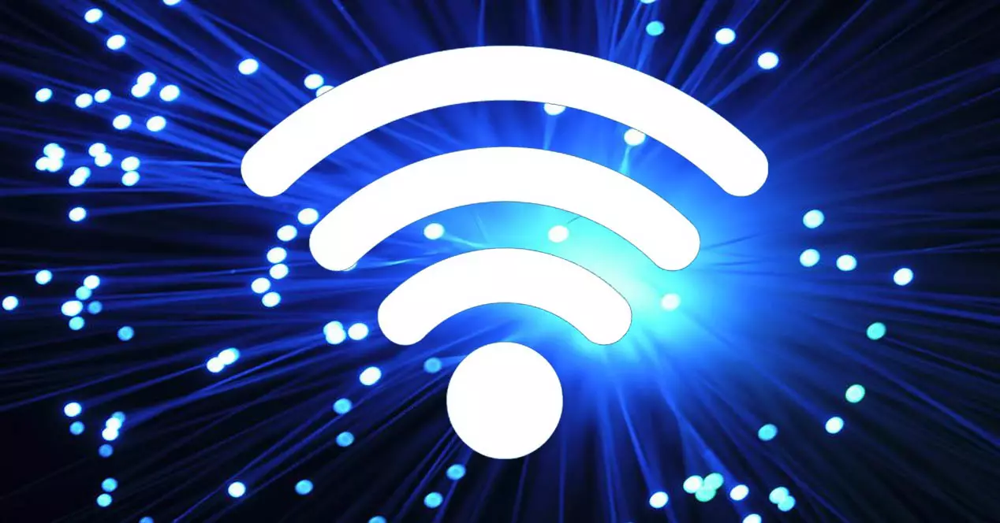

Internet se podría definir como una red global de redes de ordenadores cuya finalidad es permitir el intercambio libre de información entre todos sus usuarios. Pero sería un error considerar Internet únicamente como una red de computadoras.
Internet aporta una serie de posibilidades para el desarrollo personal y para la realización de muchas de nuestrasrealización de muchas de realización de muchas de nuestras actividades diaria.
El acceso gratuito a Internet debe considerarse como un derecho humano, ya que las personas que no pueden conectarse a Internet, en particular en los países en desarrollo, carecen de formas significativas de influir en los actores mundiales que dan forma a su vida cotidiana, según un nuevo estudio. Internet es una red informática mundial, descentralizada, formada por la conexión directa entre computadoras u ordenadores mediante un protocolo especial de comunicación (IP, Internet protocol). dispositivos , y que permite proporcionar nombres de equipo más fáciles de recordar que una dirección IP que es numérica.
